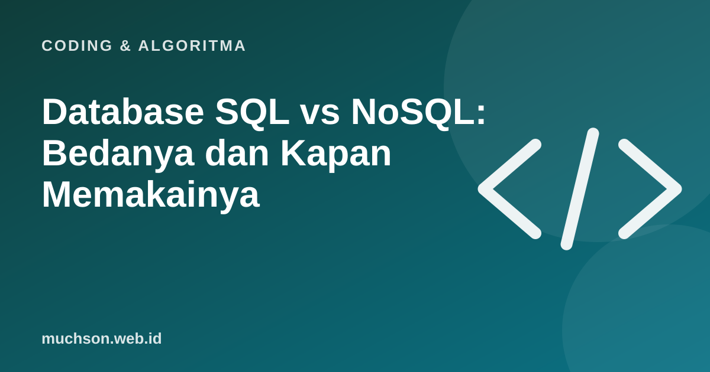

Beranda › Artikel › Coding & Algoritma
Coding & AlgoritmaDatabase SQL vs NoSQL: Bedanya dan Kapan Memakainya
Hampir setiap aplikasi menyimpan data: akun pengguna, pesanan, pesan, atau nilai siswa. Pilihan database memengaruhi cara data disimpan, dicari, dan dijaga konsistensinya. Dua kelompok besar yang sering dibandingkan adalah database relasional (SQL) dan NoSQL.

Database relasional (SQL)
Database relasional menyimpan data dalam tabel berisi baris dan kolom, seperti spreadsheet yang saling terhubung. Struktur (skema) ditentukan di awal, dan hubungan antar tabel dibuat dengan kunci. Data diakses dengan bahasa SQL. Contoh: PostgreSQL, MySQL, MariaDB, SQLite, SQL Server.
| id | nama | kota |
|---|---|---|
| 1 | Ani | Malang |
| 2 | Budi | Madiun |
| id_pesanan | id_pelanggan | total |
|---|---|---|
| 101 | 1 | 250000 |
| 102 | 1 | 80000 |
| 103 | 2 | 120000 |
SELECT p.nama, SUM(o.total) AS belanja
FROM pelanggan p
JOIN pesanan o ON o.id_pelanggan = p.id
GROUP BY p.nama;NoSQL
NoSQL adalah istilah payung untuk database yang tidak memakai model tabel relasional. Bentuknya beragam:
| Jenis | Cara menyimpan | Contoh | Cocok untuk |
|---|---|---|---|
| Dokumen | Dokumen mirip JSON | MongoDB, Firestore | Data yang strukturnya bervariasi, katalog produk |
| Key-value | Pasangan kunci dan nilai | Redis | Cache, sesi login, penghitung |
| Kolom lebar | Kolom yang dikelompokkan | Cassandra | Data sangat besar, banyak penulisan |
| Graf | Simpul dan hubungan | Neo4j | Jejaring sosial, rekomendasi |
{
"_id": 1,
"nama": "Ani",
"kota": "Malang",
"pesanan": [
{ "id": 101, "total": 250000 },
{ "id": 102, "total": 80000 }
]
}Pada database dokumen, pesanan bisa disimpan langsung di dalam dokumen pelanggan. Membaca data pelanggan beserta pesanannya cukup satu kali ambil, tetapi memperbarui data yang tersebar di banyak dokumen bisa lebih rumit.
Perbandingan
| Aspek | SQL (relasional) | NoSQL |
|---|---|---|
| Struktur | Skema tetap, tabel | Fleksibel, beragam model |
| Hubungan data | Kuat, dengan JOIN | Sering disatukan dalam dokumen atau dikelola aplikasi |
| Konsistensi transaksi | Kuat (ACID) sebagai bawaan | Bervariasi; banyak yang kini mendukung transaksi |
| Skala | Umumnya ditingkatkan dengan server lebih kuat, bisa juga dibagi | Banyak yang dirancang untuk dibagi ke banyak server |
| Contoh pemakaian | Keuangan, pesanan, inventaris, nilai siswa | Cache, katalog fleksibel, log, data real-time |
ACID (Atomicity, Consistency, Isolation, Durability) menjamin transaksi, misalnya transfer uang, terjadi seluruhnya atau tidak sama sekali. Untuk data keuangan, jaminan ini sangat penting.
Bagaimana memilih?
Banyak aplikasi nyata memakai keduanya: database relasional sebagai sumber kebenaran utama, ditambah Redis untuk cache atau database dokumen untuk bagian tertentu. Untuk sebagian besar proyek pemula dan bisnis kecil, database relasional adalah pilihan awal yang aman.